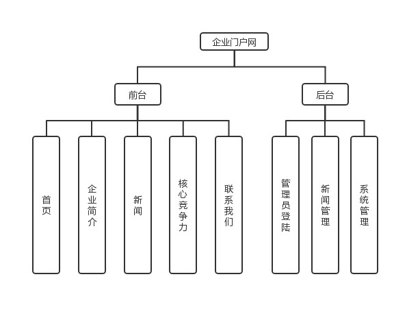
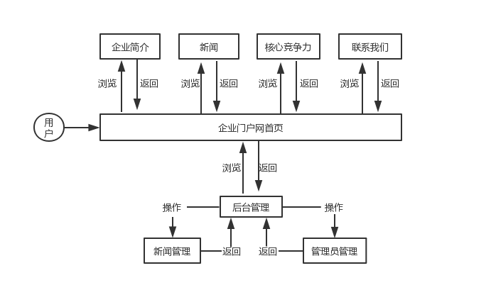
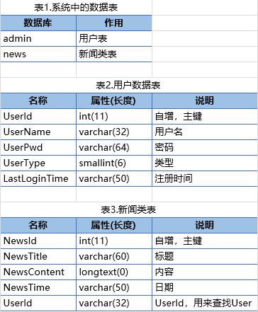

1.系统功能结构：
2.系统业务流程：


3.系统数据表结构：
4.两大模块：

注意：用户表中的注册时间变量名写错，应该是registerTime
4.1 新闻模块及其实现：
在数据库中存储新闻消息，并在前台jsp显示。
4.2 后台维护模块：
人员登陆之后，可以在后台发布和修改自己的新闻。管理人员可以发布和修改所有的新闻。
4.3 数据库实现
数据库操作使用mybatis. 具体用Dao层实现, 用Service层隔离数据库操作.